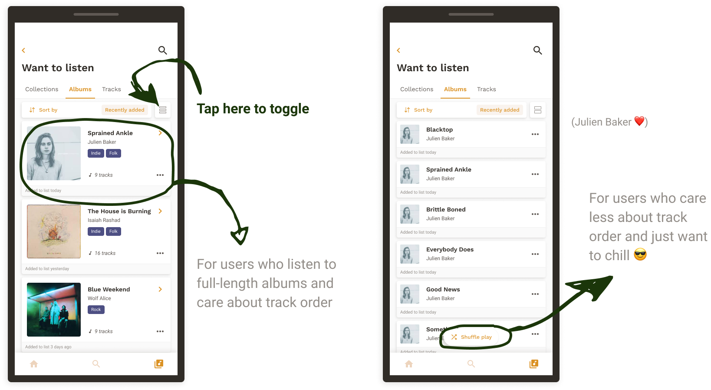
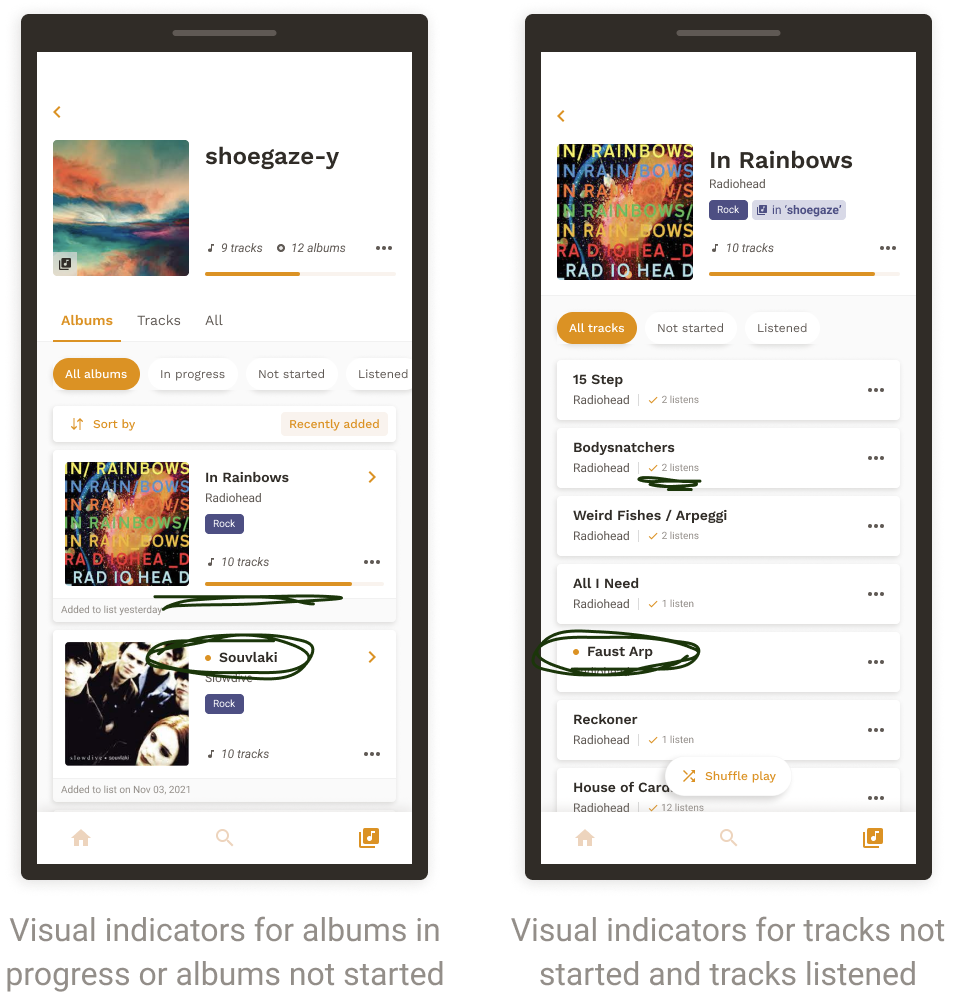

Yours truly :)
October 2021 - November 2021
I assume like many people, I am always on the lookout for new music, either on the internet or through recommendations from friends. However, I found myself always forgetting the name of a track or album because I don’t have a system in place for recording this information. I am left with several haphazard lists on my phone, on my laptop, on sticky notes, or saved to the depths of my Spotify collections.
On a separate note, I also set some personal design goals that I wanted to tackle with this project.
Talk to more people and have meaningful conversations about my ideas
Learn more about visual design principles and experiment with your learnings
If you find something new, save it for later or into a collection with other music you intend to listen to.

Search directly from your “Want to listen” list. Filter and queue up tracks by genre or your mood.

Make sure you’re getting through your collections and albums with a visual representation of your progress.

I started by browsing Reddit threads along the lines of “How to keep track of music you intend to listen to”. Here are a few important insights.
I also had conversations with peers on the topic. It turns out music threads on Reddit cater to certain types of individuals.
Listener Type A / The Music Connoisseur
Intentional listening
Actively seeks out new music to listen to
Explores discographies from a variety of artists or genres
Keen on listening to albums in full
Listener Type B / The Passive Listener
Casual listening or background music
May follow a few favourite artists
Does not actively seek out or explore different artists or genres
I also browsed five popular music streaming sites to identify areas of opportunity.
Provides recommendations and curated playlists based on current listening
Provides a record of your listening statistics and history
Discover and directly support new artists and their music
Discover, follow, & connect with new artists and their music
Listen to music and playlists as presented through the algorithm
Sites prioritized organization by track rather than by album. Type A listeners are keen on listening to full albums in track order
Streaming sites use algorithms to decide what music to play. Type A listeners may use their knowledge of the music to decide what to play
Provide a system for organizing “Want to Listen” lists
Help listeners decide what music to play
Support both listening styles
When showing these wireframes to users, they mentioned that cover art was an important factor in deciding what to listen to because it can visually appeal to the user’s mood or vibe.
In a later version of the wireframes, the album covers were tiled and larger in size.

In this iteration, users can organize their list into collections of tracks or albums.

In the Albums tab, we can accomodate for listeners who listen to unique albums (Type A), but also listeners who care less about track order and just want to play some background music (Type B).

Following user feedback, tags were removed from collections. Tags are not effective if users have not heard any of the music in the collection.

It was difficult for users to predict behaviour when “Shuffle play” is tapped. Specifically, how an album’s track order would shuffle between individual tracks.

When the user taps “Shuffle play” the first track will start playing, but they will be taken to a queue that displays the shuffle order.

It was clear to users that 4 out of 9 tracks in the collection had been listened to. However, it was unclear what 1 out of 12 albums meant. Users were not sure if this meant 1 album was in progress or finished.

Instead of leaving the interpretation of ‘1 out of 12 albums’ to the user, the user can filter between albums in progress, albums not started, and finished albums.

I also added a visual differentiator between albums in progress, albums not started, and finished albums.


I quickly studied up on using the HSB colour system to pick colours for my design vs. hex codes, which are what I traditionally used. The benefits of the HSB system were clear as it allowed for a systematic picking of colour by choosing hues with similar saturations and brightness.
Here, I paired earthier and neutral tones with a fluorescent orange.

With text, I learned the importance of setting line height to around 120-130% and as a multiple of four so that it doesn’t negatively affect the padding or height of larger components.

It’s difficult to talk to the people around me about my ideas, so I made a goal to have conversations at various stages of the process. In total, I had discussions with eight different individuals either through user interviews, concept testing with wireframes and design walkthroughs. This may not feel like a lot, but it is a huge improvement from my typical send-five-people-a-survey method.
© Coded with 💙 by jennyfurhe